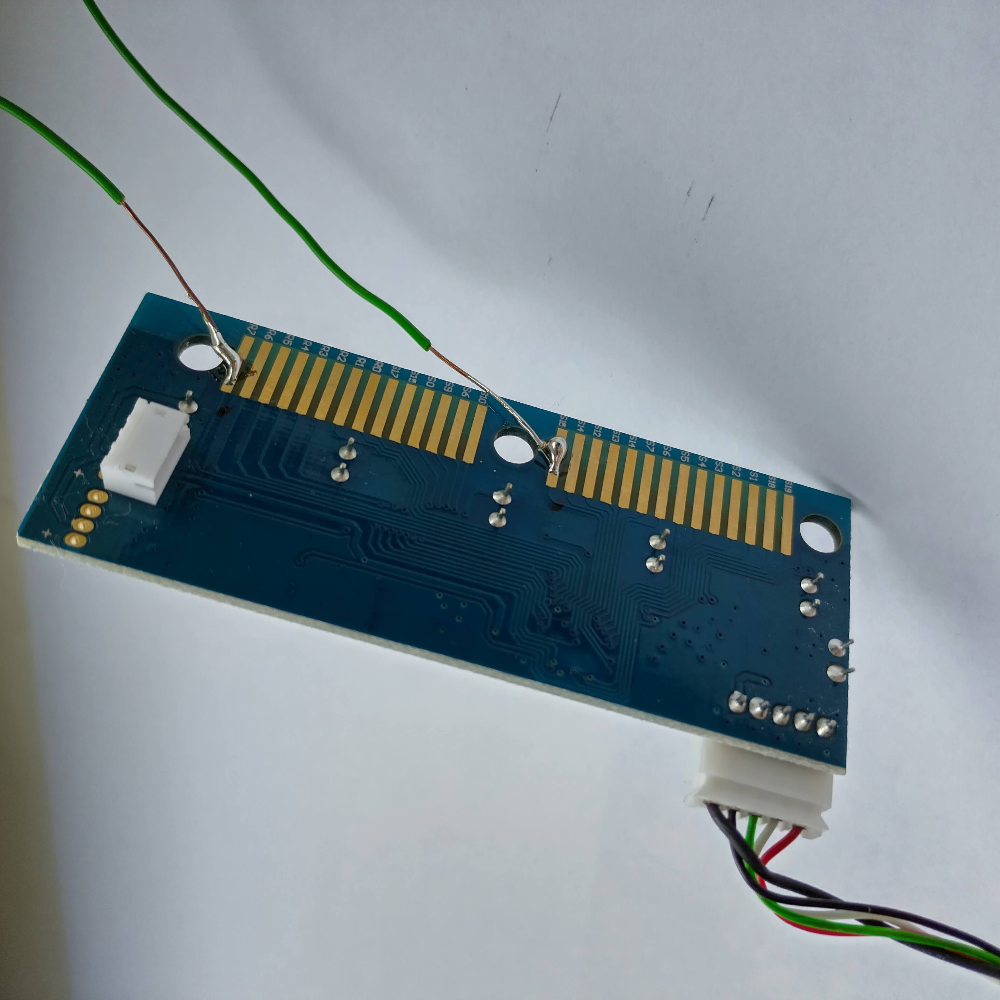
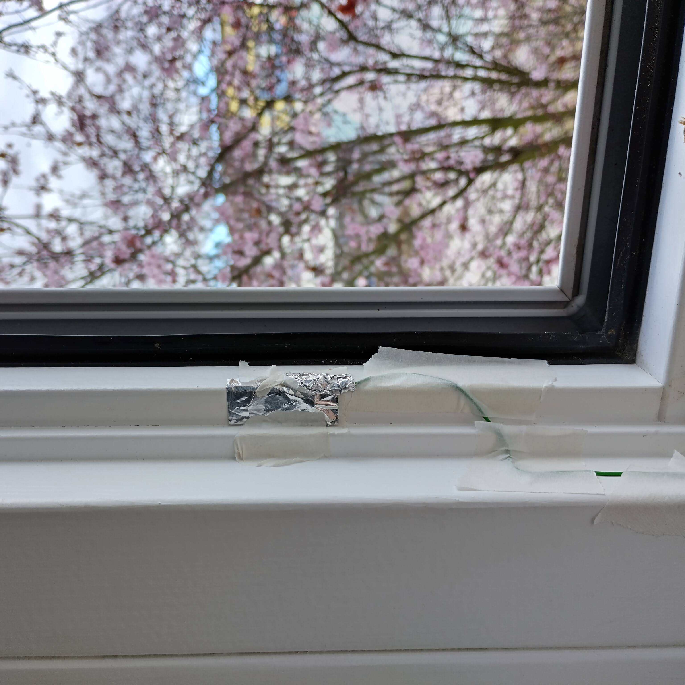

|
|
Lüftassistent 1.0
In einem Gruppenprojekt entwickelten wir den Lüftassistent 1.0.
Mit der Platine eines Keyboard als Basis hilft der Lüftassistent einem dabei, im Winter nicht länger als unbedingt nötig die Fenster offen zu lassen.
Die Idee kam uns, als wir im Ideenfindungsprozess waren und vergaßen das Fenster zu schließen.
Neben der Platine besteht der Haushaltshelfer aus Kabeln, welche mit 2 Kontaktplättchen am Fenster angebracht werden.
Diese schließen die Platine kurz und geben über Usb einen Tasteninput an den Computer weiter.
Die Kabel sind an die Kontakte der Taste "0" gelötet.
Die zugehörige Software mussten wir also ebenfalls durch diese Taste steuern können.


Der Lüftassistent ist in der Lage einen Timer von 5 min. zu starten, sobald die Taste "0" als not pressed erkannt wird.
Dieser Fall tritt ein, sobald das Fenster geöffnet, und somit der Kontakt un terbrochen wird.
Nach Ablauf des Timer ist das Fenster wieder zu schließen, der Timer wird zurückgesetzt und startet bei erneutem öffnen von vorne.
Wir haben den Code in eine Website inegriert, damit es für Jeden zugänglich und auch verwendbar ist.
lueftassistent
|